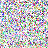

一鍵擷取檢驗報告，自動整理成濃縮格式
按下 Ctrl+E 取代 Ctrl+A + Ctrl+C，再按 Ctrl+3 貼上結果
擷取成功後，右下角會自動彈出綠色浮動視窗顯示結果：
所有熱鍵皆可在設定視窗（Ctrl+0）中修改。修飾鍵可選 Ctrl 或 Alt。
| 預設熱鍵 | 預設功能 | 說明 |
|---|---|---|
| Ctrl+E | 擷取（全選+複製） | 一鍵完成 Ctrl+A → Ctrl+C，程式自動辨識並整理報告 |
| Ctrl+R | 貼上結果 | 將整理後的報告寫入剪貼簿並貼上 |
| Ctrl+1 | 快貼 1 | 貼上自訂文字片段 |
| Ctrl+2 | 快貼 2 | 貼上自訂文字片段 |
| Ctrl+3 | 濃縮報告 | 貼上整理後的檢驗報告（預設報告 slot） |
| Ctrl+4 | 快貼 3 | 貼上自訂文字片段 |
| Ctrl+0 | 設定 | 開啟設定視窗（固定，不可更改） |
「擷取」= 全選 + 複製，一鍵完成兩個動作。
原本需要 Ctrl+A（全選）→ Ctrl+C（複製）兩步驟，
設定擷取熱鍵後只需按一次（預設 Ctrl+E）即可完成。
Ctrl+1~4 每個 slot 可在設定中切換為以下類型：
| 類型 | 功能 |
|---|---|
| 快貼 | 按熱鍵自動貼上預設的文字 |
| 報告 | 貼上整理後的檢驗報告結果 |
| 擷取 | 一鍵全選+複製（同 Ctrl+E 功能） |
| 未設定 | 此熱鍵不動作 |
程式啟動後會常駐在右下角系統匣，醫生圖示的十字會變色表示目前狀態：
同一位病人有多份報告（生化、CBC、尿液）？只要在 15 秒內連續擷取，程式會自動合併成一行。
血液項目（BUN、Cr、Na 等）只從血液檢體擷取；尿液項目（ACR、PCR）只從尿液檢體擷取，不會混淆。
| 順序 | 項目 | 範例 |
|---|---|---|
| 1 | AC（HbA1c） | AC:122(6.5) |
| 2 | BUN / Cr | BUN/Cr:27/1.71 |
| 3 | Na / K | Na/K:139/3.5 |
| 4 | HCO3 | HCO3:24 |
| 5 | ALT / AST | ALT/AST:14/22 |
| 6 | Alb | Alb:4.2 |
| 7 | TC / TG / L / H | TC/TG/L/H:165/121/81/53 |
| 8 | UA | UA:7.2 |
| 9 | Ca / IP | Ca/IP:9.3/5.9 |
| 10 | Iron / TIBC / Ferritin | Iron/TIBC/Ferritin:49/286/328 |
| 11 | Hb / WBC / PLT | Hb:10.2 |
| 12 | ACR（尿液） | UAC:45.2 |
| 13 | PCR（尿液） | UPC:0.35 |
日期格式：民國年月日（如 1150321 = 115年3月21日）。BUN、HCO3、Iron、TIBC、Ferritin 自動取整數。
我的文件\EMR_Report\